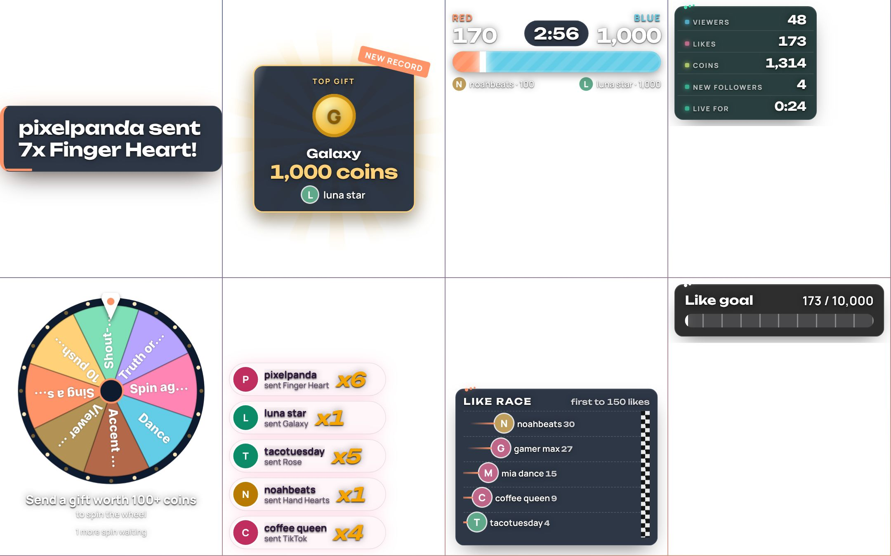

flock.tt turns gifts, likes, follows and chat into alerts, sounds, animated overlays and OBS scene changes, so your whole audience can feel every moment.
Free. Runs on your own computer. No account needed.

Connect with your TikTok username and flock.tt hears every gift, like, follow, share and chat message as it happens. Then you decide what your stream does about it.
Animated overlays made for TikTok LIVE. Viewers see their gifts land on screen.

Arrange overlays in the layout editor and add a single link to TikTok LIVE Studio or OBS. Change things later and your stream updates the moment you save.

When a big gift lands, switch to your party scene for ten seconds. When chat says !quiet, mute the music. flock.tt talks to OBS Studio directly.

You need Node.js 18 or newer. Then download flock.tt and run:
# in the flock.tt folder
npm install
npm start
Open localhost:8787, type your TikTok username and press Connect. It works while you're live.
http://localhost:8787
Build a layout, copy its link, and add it in TikTok LIVE Studio as a Link source, or in OBS as a Browser source.
…/overlays/scene.html?layout=main
The demo runs entirely in your browser with pretend viewers, so you can click through everything.